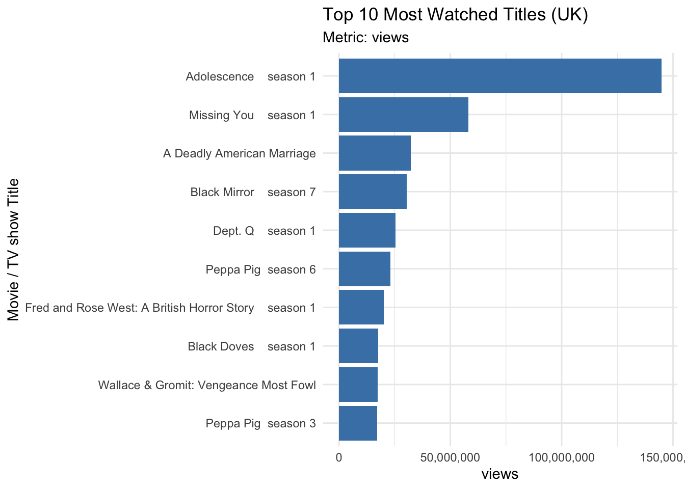
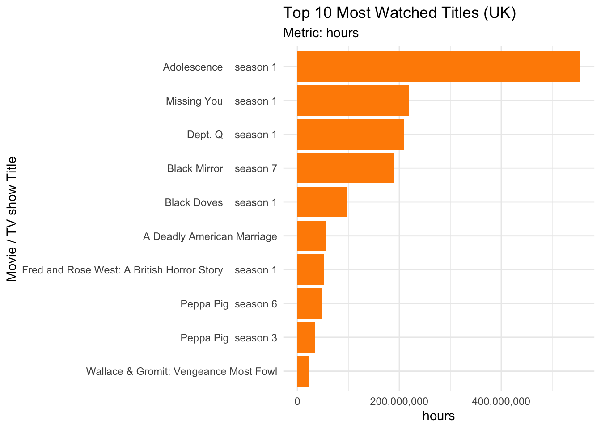
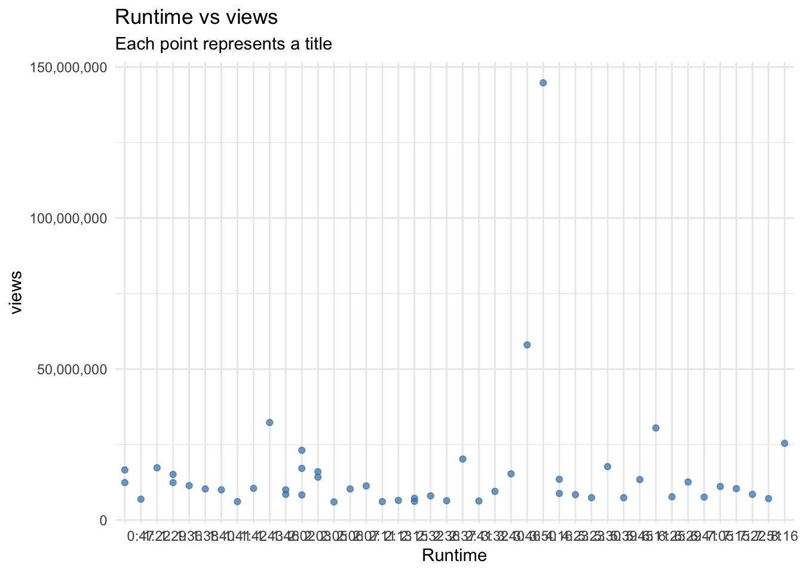
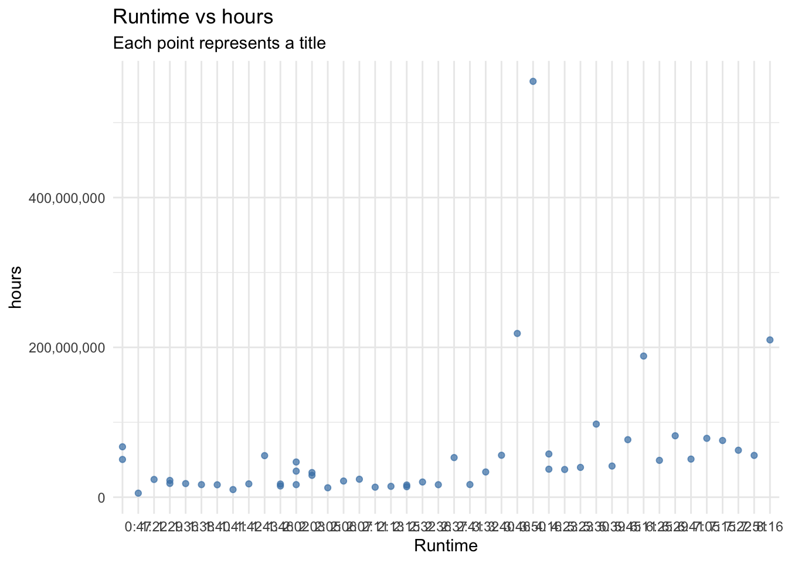

# Setup
pacman::p_load(tidyverse, # tidyverse packages including purrr
purrr, # automating
xml2, # parsing XML
rvest, # parsing HTML
robotstxt) #checking path is permitted SOCS0100 Assessment 2
Part I-A
This assessment utilized static web-scraping in R to comprehensively gather data from FlixPatrol, which is a platform that collects streaming data about movies and TV shows (Eu-startups, 2026). The data that was scraped was the “Most Watched Movies and TV Shows from the United Kingdom in 2025 (January - June)”, in order to understand cultural trends in the UK, media consumption patterns, and genre popularity.
The data was collected first by loading required packages as follows:
However, before being able to scrape the data, the code below allowed to check whether this website was scrapable or not. Only once the code confirmed that the data could be scraped was the data collected and converted into a table called “table.df”. A specific xpath of the table in the website was selected,
# Checking if path is permitted
paths_allowed(paths="https://flixpatrol.com/most-watched/2025-1/titles-from-united-kingdom/")
url <- "https://flixpatrol.com/most-watched/2025-1/titles-from-united-kingdom/"
parsed <- read_html(url) # This reads the HTML content of the page.
parsed.sub <- html_element(parsed, xpath = '/html/body/div[4]/div[1]') # This extracts the specific xpath of the table containing the wanted most-watched data. # A tibble: 6 × 9
`` title type premiere genre country hours runtime views
<dbl> <chr> <chr> <chr> <chr> <chr> <chr> <chr> <chr>
1 NA "" All … All2026… AllA… "AllAr… TV S… TV Sho… TV S…
2 1 "Adolescence season… TV S… 2025 Crime "" 555,… 3:50 144,…
3 2 "Missing You season… TV S… 2025 Crime "" 218,… 3:46 58,0…
4 3 "A Deadly American Mar… Movie 2025 Docu… "" 55,5… 1:43 32,3…
5 4 "Black Mirror seaso… TV S… 2011 Scie… "" 188,… 6:11 30,5…
6 5 "Dept. Q season 1" TV S… 2025 Crime "" 210,… 8:16 25,4…Part I-B
In this section, data wrangling and cleaning was carried out. Any empty rows were removed, and all names were cleaned into snake_case using the janitor package. Furthermore, in the “hours” and “views” columns, data were written twice in each individual cell so data cleaning also involved making sure that one cell only contained one value.
# Cleaning names
names(mostwatched_data) <- janitor::make_clean_names(names(mostwatched_data)) # This cleans all names into snake_case.
# Deleting empty rows
empt <- apply(mostwatched_data, 1, FUN = function(x) all(is.na(x) | x == "")) # Removing missing values or empty rows.
mostwatched_data <- mostwatched_data[which(!empt), ]
# Deleting the repeated second value in columns "hours" and "views"
mostwatched_data$views <- sub("\\s.*", "", mostwatched_data$views) # Each cell in "hours" and "views" had the same information written twice. This line thus keeps only one number.
mostwatched_data$hours <- sub("\\s.*", "", mostwatched_data$hours)The following table was obtained after all data wrangling and cleaning process:
| rank | title | type | premiere | genre | hours | runtime | views |
|---|---|---|---|---|---|---|---|
| 1 | Adolescence season 1 | TV Show | 2025 | Crime | 555,100,000 | 3:50 | 144,800,000 |
| 2 | Missing You season 1 | TV Show | 2025 | Crime | 218,600,000 | 3:46 | 58,000,000 |
| 3 | A Deadly American Marriage | Movie | 2025 | Documentary | 55,500,000 | 1:43 | 32,300,000 |
| 4 | Black Mirror season 7 | TV Show | 2011 | Science Fiction | 188,400,000 | 6:11 | 30,500,000 |
| 5 | Dept. Q season 1 | TV Show | 2025 | Crime | 210,000,000 | 8:16 | 25,400,000 |
Figure 1 illustrates the rank, title, the date the movie/TV shows were premiered, genre, hours streamed, the length of the content, and the number of views. Media, especially those provided by the abundantly used Netflix platform, is easily accessible for most people. Today media not only shapes our perspectives and beliefs, but also mirrors societal preferences and culture. The genre of media and streaming preferences influences our knowledge and way of thinking, thus potentially influencing social behaviour. As a result, investigating streaming trends and patterns in social science is vital in order to understand individuals and culture, as it mirrors ourselves.
Part II-A
In this second section, the refined dataset was used to produce 3 interactive visualisations dashboard on a Shiny app. The first visualisation method chosen was an bar chart showcasing the relationship between movie/TV show and the number of views/hours.


Figure 3 and Figure 2 clearly presents the most popular titles in the UK by rank. These two bar charts gives us insight into patterns of media consumption. For instance, the TV show “Dept. Q” has a relatively low number of views compared to the show “Missing You”, which ranks second in number of views. However, “Dept. Q” has a very similar number of hours watched as “Missing You”. This reflects patterns of social consumption, also known as “binge-watching”. In other words, some viewers in the UK enjoy to binge-watch media. While a low number of views may suggest low popularity at first glance, the number of hours watched indicates strong audience engagement.
However, the analysis done above can be applied to only certain titles. The general trend that data is showing is that titles with high number of views usually also have high number of hours watched as well. In summary, the bar charts informs us on popularity.
The second data visualisation method used a scatter plot to illustrate the relationship between runtime and views and runtime with hours watched.


Figure 5 and Figure 4 have a more or less constant trendline, with the exception of one outlier at 3h50. This suggests that media length is likely not a factor to affect media consumption for both movies and TV shows, which may mean consumer engagement is determined more by the quality or content of the media.